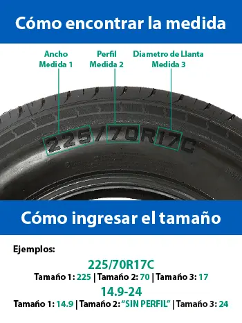

<ng-container *ngIf="innerWidth > 426">
  <ng-container *ngIf="banners">
    <div class="container" style="text-align: center">
      
    </div>
  </ng-container>
</ng-container>
<ng-container *ngIf="innerWidth < 427">
  <ng-container *ngIf="banners">
    
  </ng-container>
</ng-container>
<ng-container *ngIf="innerWidth <= 1025">
  <div [ngStyle]="{ 'margin-top': banners ? '0px' : '30px' }">
    <app-page-header
      [breadcrumbs]="breadcrumbs"
      [textToSearch]="textToSearch"
      [totalRegistros]="PagTotalRegistros"
    >
    </app-page-header>
  </div>
  <div
    class="col-sm"
    style="
      border: 1px solid;
      margin-top: 5px;
      margin-bottom: 5px;
      color: rgba(0, 0, 0, 0.1);
    "
  ></div>
</ng-container>

<ng-template #sidebar>
  <div
    class="shop-layout__sidebar d-none d-lg-block d-xl-block"
    style="border-radius: 10px"
  >
    <div class="block block-sidebar">
      <div
        class="block-sidebar__item"
        (window:scroll)="positionScroll($event)"
        [class.top]="scrollPosition > 700"
      >
        <app-widget-filters
          [filtrosOculto]="filtrosOculto"
          [filters]="filters"
          [removableFilters]="removableFilters"
          [removableCategory]="removableCategory"
          [marca_tienda]="marca_tienda"
          (filtersSelected)="updateFilters($event)"
          (clearCategory)="clearCategory()"
          (clearAll)="clearAll()"
        >
        </app-widget-filters>
      </div>
    </div>
  </div>

  <div
    class="shop-layout__sidebar shop-layout-mobile__sidebar"
    [ngClass]="{ active: visibleFilter == true }"
  >
    <div class="block block-sidebar">
      <div class="block-sidebar__item">
        <app-widget-filters
          [filtrosOculto]="filtrosOculto"
          [filters]="filters"
          [removableFilters]="removableFilters"
          [removableCategory]="removableCategory"
          (filtersSelected)="updateFilters($event)"
          (clearCategory)="clearCategory()"
          (clearAll)="clearAll()"
        >
        </app-widget-filters>
      </div>

      <div class="row m-0">
        <div class="col-12 py-0">
          <button
            name="visibleFilter"
            class="btn w-100 btn-secondary btn-lg text-center"
            (click)="visibleFilter = false"
          >
            Cerrar
          </button>
        </div>
      </div>
    </div>
  </div>
</ng-template>

<div class="shop-layout container shop-layout--sidebar--start mt-3 site_b2c">
  <ng-container [ngTemplateOutlet]="sidebar"></ng-container>

  <div class="shop-layout__content container">
    <!-- FILTRO CADENA PARA NIEVE -->
    <div *ngIf="viewFilterChain" class="block mb-3">
      <p-card [style]="{ width: '100%' }" styleClass="card-chain">
        <ng-template pTemplate="header">
          <div
            class="flex p-3"
            style="background-color: #0063b9; justify-content: center"
          >
            <h5 style="align-self: center; color: white; margin: 0px">
              Busca tu cadena de nieve
            </h5>
          </div>
        </ng-template>
        <ng-template pTemplate="content">
          <div
            class="flex flex-wrap mb-4 custom-chain"
            style="justify-content: center"
          >
            <h5
              class="d-none d-sm-block"
              style="align-self: center; font-size: 18px; margin-top: -5px"
            >
              ¿Cómo encuentro mi medida?
              <i
                class="pi pi-info-circle"
                [pTooltip]="tooltipContent"
                [autoHide]="false"
                tooltipStyleClass="custom-chain"
                tooltipPosition="bottom"
                style="color: blue; font-size: 1rem; cursor: pointer"
              ></i>
            </h5>
            <h5
              class="d-block d-sm-none"
              style="align-self: center; font-size: 18px; cursor: pointer"
              (click)="viewImageChain()"
            >
              ¿Cómo encuentro mi medida?
              <i
                class="pi pi-info-circle"
                style="color: blue; font-size: 1rem"
              ></i>
            </h5>
            <ng-template #tooltipContent>
              <div>
                
              </div>
            </ng-template>
            <p-dialog
              header="Dimensiones del neumático"
              [modal]="true"
              [(visible)]="viewImage"
              [style]="{ width: '28rem' }"
            >
              <p-image
                src="../../../../../assets/images/medida_neumatico.webp"
                alt="Image"
                width="100%"
              />
            </p-dialog>
          </div>
          <div class="d-flex justify-content-center">
            <div class="col-12 col-md-6 p-0">
              <div class="mb-4">
                <p-floatLabel>
                  <!-- <p-dropdown
                      styleClass="w-full"
                      [options]="values_anchos"
                      [(ngModel)]="select_ancho"
                      inputId="float-label"
                      (onChange)="selectAncho($event.value)"
                  /> -->
                  <p-dropdown
                    styleClass="w-full"
                    [options]="anchos"
                    [(ngModel)]="select_ancho"
                    inputId="float-label"
                    emptyMessage="No hay medidas de ancho disponibles"
                    [disabled]="isActiveFilterAplicacionCadena"
                    (onChange)="selectAncho($event.value)"
                  />
                  <label for="float-label">Ancho neumático</label>
                </p-floatLabel>
              </div>
              <div *ngIf="select_ancho" class="mb-4">
                <p-floatLabel>
                  <p-dropdown
                    styleClass="w-full"
                    [options]="values_perfiles"
                    [(ngModel)]="select_perfil"
                    optionLabel="perfil"
                    optionValue="perfil"
                    inputId="float-label"
                    emptyMessage="No hay medidas de perfil asociados"
                    [disabled]="isActiveFilterAplicacionCadena"
                    (onChange)="selectPerfil($event.value)"
                  />
                  <label for="float-label">Perfil neumático </label>
                </p-floatLabel>
              </div>
              <div *ngIf="select_perfil" class="mb-4">
                <p-floatLabel>
                  <p-dropdown
                    styleClass="w-full"
                    [options]="values_aros"
                    [(ngModel)]="select_aro"
                    emptyMessage="No hay medidas de aro asociados"
                    [disabled]="isActiveFilterAplicacionCadena"
                    inputId="float-label"
                  />
                  <label for="float-label">Aro neumático </label>
                </p-floatLabel>
              </div>
            </div>
          </div>
          <div class="flex" style="justify-content: center">
            <div class="w-50 mt-2">
              <p-button
                [disabled]="
                  !select_ancho ||
                  !select_perfil ||
                  !select_aro ||
                  isActiveFilterAplicacionCadena
                "
                label="Buscar"
                class="w-full"
                styleClass="w-full"
                (onClick)="filterChain()"
              />
            </div>
          </div>
          <div class="flex" style="justify-content: end; padding-top: 18px">
            <h5
              style="
                text-decoration: underline;
                font-size: 14px;
                cursor: pointer;
              "
              (click)="cleanFilterChain()"
            >
              Limpiar filtro
              <i class="pi pi-trash"></i>
            </h5>
          </div>
        </ng-template>
      </p-card>
    </div>
    <!-- FIN FILTRO CADENA PARA NIEVE -->
    <div class="block">
      <app-products-view
        *ngIf="origen"
        [isInitialLoading]="isInitialLoading"
        [isScrollLoading]="isScrollLoading"
        [paramsCategory]="paramsCategory"
        [origen]="origen"
        [breadcrumbs]="breadcrumbs"
        [textToSearch]="textToSearch"
        [currentPage]="currentPage"
        [showProductOptions]="true"
        [products]="products"
        [limit]="pageSize"
        [totalPaginas]="totalPaginas"
        [desde]="PagDesde"
        [hasta]="PagHasta"
        [totalRegistros]="PagTotalRegistros"
        (onInfiniteScrollEvent)="onInfiniteScroll($event)"
        (filterState)="setFilteState($event)"
        (sort)="setSort($event)"
      >
      </app-products-view>
    </div>
  </div>
</div>
